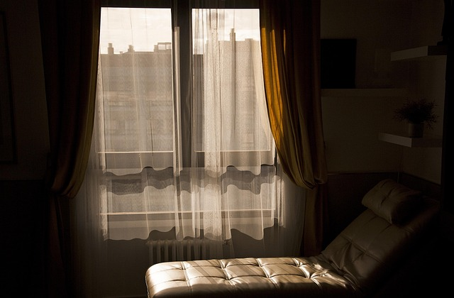

Consejos Psicológicos

Practica la respiración consciente: Tómate 5 minutos al día para respirar profundamente. Ayuda a reducir la ansiedad.
Refuerza tu autoestima: Escribe 3 cosas que te gustan de ti cada mañana. Cambia la forma en que te ves.
Cuida tus relaciones: Establece límites sanos con los demás. Decir “no” también es un acto de amor propio.
Artículos Recomendados

Testimonios

"Lina me ayudó a superar un momento muy difícil. Su calidez y profesionalismo marcaron la diferencia."

"Gracias a Lina, aprendí a gestionar mis emociones de manera más saludable. Totalmente recomendada."

"Sus sesiones me han dado claridad y tranquilidad mental en todo sentido. Una gran profesional."

"Su empatía y profesionalismo me ayudaron a superar momentos difíciles y encontrar nuevas perspectivas en la vida."